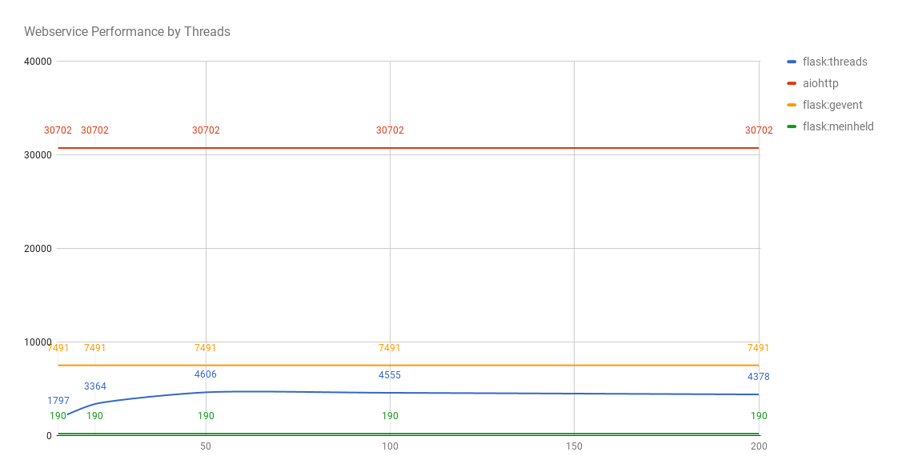

Aiohttp vs Multithreaded Flask for High I/O Applications
Over the past year, my team has been making the transition from Flask to aiohttp. We're making this transition because of a lot of the situations where non-blocking I/O theoretically scales better:
- large numbers of simultaneous connections
- remote http requests with long response times
There is agreement that asyncio scales better memory-wise: a green thread in Python consumes less memory than a system thread.
However, performance for latency and load is a bit more contentious. The best way to find out is to run a practical experiment.
To find out, I forked py-frameworks-benchmark, and designed an experiment.
The Experiment #
The conditions of the web application, and the work performed, are identical:
- a route on a web server that: 1. returns the response as json 2. queries a
- http request to an nginx server returning back html.
- a wrk benchmark run, with 400 concurrent requests for 20 seconds
- running under gunicorn, with two worker processes.
- python3.6
The Variants #
The variants are:
- aiohttp
- flask + meinheld
- flask + gevent
- flask + multithreading, varying from 10 to 1000.
Results
| variant | min | p50 | p99 | p99.9 | max | mean | duration | requests |
|---|---|---|---|---|---|---|---|---|
| aiohttp | 163.27 | 247.72 | 352.75 | 404.59 | 1414.08 | 257.59 | 20.10 | 30702 |
| flask:gevent | 85.02 | 945.17 | 6587.19 | 8177.32 | 8192.75 | 1207.66 | 20.08 | 7491 |
| flask:meinheld | 124.99 | 2526.55 | 6753.13 | 6857.55 | 6857.55 | 3036.93 | 20.10 | 190 |
| flask:10 | 163.05 | 4419.11 | 4505.59 | 4659.46 | 4667.55 | 3880.05 | 20.05 | 1797 |
| flask:20 | 110.23 | 2368.20 | 3140.01 | 3434.39 | 3476.06 | 2163.02 | 20.09 | 3364 |
| flask:50 | 122.17 | 472.98 | 3978.68 | 8599.01 | 9845.94 | 541.13 | 20.10 | 4606 |
| flask:100 | 118.26 | 499.16 | 4428.77 | 8714.60 | 9987.37 | 556.77 | 20.10 | 4555 |
| flask:200 | 112.06 | 459.85 | 4493.61 | 8548.99 | 9683.27 | 527.02 | 20.10 | 4378 |
| flask:400 | 121.63 | 526.72 | 3195.23 | 8069.06 | 9686.35 | 580.54 | 20.06 | 4336 |
| flask:800 | 127.94 | 430.07 | 4503.95 | 8653.69 | 9722.19 | 514.47 | 20.09 | 4381 |
| flask:1000 | 184.76 | 732.21 | 1919.72 | 5323.73 | 7364.60 | 786.26 | 20.04 | 4121 |
You can probably get a sense that aiohttp can server more requests than any other. To get a real sense of how threads scale we can put the request count on a chart:

The interesting note is that the meinheld worker didn't scale very well at all. Gevent handled requests faster than any threading implementation.
But nothing handled nearly as many requests as aiohttp.
These are the results on my machine. I'd strongly suggest you try the experiment for yourself: the code is available in my fork.
If anyone has any improvements on the multithreading side, or can explain the discrepency in performance, I'd love to understand more.